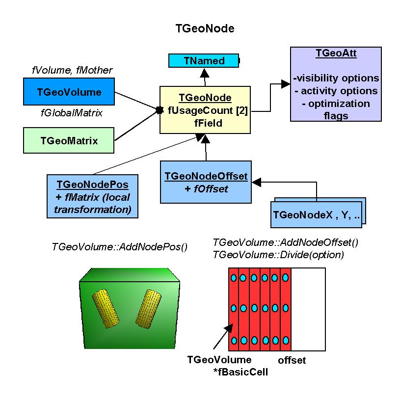
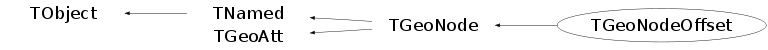

class TGeoNodeOffset: public TGeoNode
TGeoNode A node represent a volume positioned inside another.They store links to both volumes and to the TGeoMatrix representing the relative positioning. Node are never instanciated directly by users, but created as a result of volume operations. Adding a volume named A with a given user ID inside a volume B will create a node node named A_ID. This will be added to the list of nodes stored by B. Also, when applying a division operation in N slices to a volume A, a list of nodes B_1, B_2, ..., B_N is also created. A node B_i does not represent a unique object in the geometry because its container A might be at its turn positioned as node inside several other volumes. Only when a complete branch of nodes is fully defined up to the top node in the geometry, a given path like: /TOP_1/.../A_3/B_7 will represent an unique object. Its global transformation matrix can be computed as the pile-up of all local transformations in its branch. We will therefore call "logical graph" the hierarchy defined by nodes and volumes. The expansion of the logical graph by all possible paths defines a tree sructure where all nodes are unique "touchable" objects. We will call this the "physical tree". Unlike the logical graph, the physical tree can become a huge structure with several milions of nodes in case of complex geometries, therefore it is not always a good idea to keep it transient in memory. Since a the logical and physical structures are correlated, the modeller rather keeps track only of the current branch, updating the current global matrix at each change of the level in geometry. The current physical node is not an object that can be asked for at a given moment, but rather represented by the combination: current node + current global matrix. However, physical nodes have unique ID's that can be retreived for a given modeler state. These can be fed back to the modeler in order to force a physical node to become current. The advantage of this comes from the fact that all navigation queries check first the current node, therefore knowing the location of a point in the geometry can be saved as a starting state for later use. Nodes can be declared as "overlapping" in case they do overlap with other nodes inside the same container or extrude this container. Non-overlapping nodes can be created with: TGeoVolume::AddNode(TGeoVolume *daughter, Int_t copy_No, TGeoMatrix *matr); The creation of overapping nodes can be done with a similar prototype: TGeoVolume::AddNodeOverlap(same arguments); When closing the geometry, overlapping nodes perform a check of possible overlaps with their neighbours. These are stored and checked all the time during navigation, therefore navigation is slower when embedding such nodes into geometry. Node have visualization attributes as volume have. When undefined by users, painting a node on a pad will take the corresponding volume attributes./*  */
Function Members (Methods)
public:
protected:
| TGeoNodeOffset(const TGeoNodeOffset&) | |
| virtual void | TObject::DoError(int level, const char* location, const char* fmt, va_list va) const |
| void | TObject::MakeZombie() |
| TGeoNodeOffset& | operator=(const TGeoNodeOffset&) |
Data Members
public:
| enum TGeoNode::[unnamed] { | kGeoNodeMatrix | |
| kGeoNodeOffset | ||
| kGeoNodeVC | ||
| kGeoNodeOverlap | ||
| }; | ||
| enum TObject::EStatusBits { | kCanDelete | |
| kMustCleanup | ||
| kObjInCanvas | ||
| kIsReferenced | ||
| kHasUUID | ||
| kCannotPick | ||
| kNoContextMenu | ||
| kInvalidObject | ||
| }; | ||
| enum TObject::[unnamed] { | kIsOnHeap | |
| kNotDeleted | ||
| kZombie | ||
| kBitMask | ||
| kSingleKey | ||
| kOverwrite | ||
| kWriteDelete | ||
| }; | ||
| enum TGeoAtt::[unnamed] { | kBitMask | |
| }; | ||
| enum TGeoAtt::EGeoVisibilityAtt { | kVisOverride | |
| kVisNone | ||
| kVisThis | ||
| kVisDaughters | ||
| kVisOneLevel | ||
| kVisStreamed | ||
| kVisTouched | ||
| kVisOnScreen | ||
| kVisContainers | ||
| kVisOnly | ||
| kVisBranch | ||
| kVisRaytrace | ||
| }; | ||
| enum TGeoAtt::EGeoActivityAtt { | kActOverride | |
| kActNone | ||
| kActThis | ||
| kActDaughters | ||
| }; | ||
| enum TGeoAtt::EGeoOptimizationAtt { | kUseBoundingBox | |
| kUseVoxels | ||
| kUseGsord | ||
| }; | ||
| enum TGeoAtt::EGeoSavePrimitiveAtt { | kSavePrimitiveAtt | |
| kSaveNodesAtt | ||
| }; |
protected:
| UInt_t | TGeoAtt::fGeoAtt | option flags |
| TGeoVolume* | TGeoNode::fMother | mother volume |
| TString | TNamed::fName | object identifier |
| Int_t | TGeoNode::fNovlp | number of overlaps |
| Int_t | TGeoNode::fNumber | copy number |
| Int_t* | TGeoNode::fOverlaps | [fNovlp] list of indices for overlapping brothers |
| TString | TNamed::fTitle | object title |
| TGeoVolume* | TGeoNode::fVolume | volume associated with this |
private:
| TGeoPatternFinder* | fFinder | finder for this node |
| Int_t | fIndex | index of this node in the division |
| Double_t | fOffset | X offset for this node with respect to its mother |
Class Charts
{kind=link}
{kind=link}
{kind=link}
{kind=link}

Function documentation
TGeoNodeOffset(const TGeoVolume* vol, Int_t index, Double_t offset)
Constructor. Null pointer to matrix means identity transformation
TGeoMatrix * GetMatrix() const